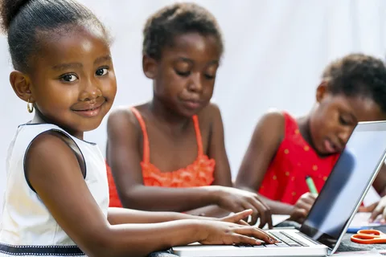
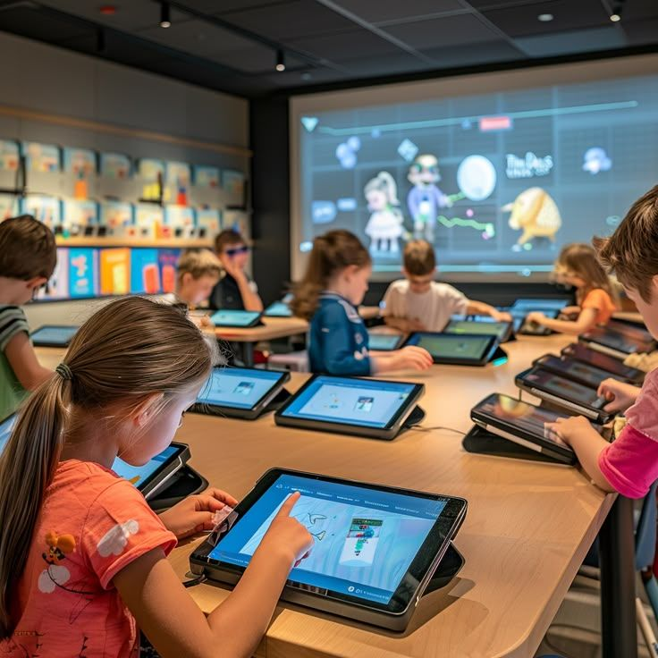

ICT education helps students build important future skills such as communication, coding, creativity, and problem-solving. These digital abilities prepare students for modern careers and support the development of smarter communities.

Students learn how to communicate safely and effectively using emails, online platforms, and digital tools. These skills help students work together and connect globally.
ICT activities help students think critically and solve challenges through coding, research, and technology-based learning.
Technology encourages creativity through graphic design, multimedia editing, website creation, and digital projects that improve learning experiences.
Future skills are important because technology is becoming part of everyday life. Students who understand ICT can adapt more easily to modern workplaces, higher education, and digital careers.
Many students in local schools still face limited access to technology and ICT learning opportunities. By improving digital education, students can gain confidence, equal opportunities, and the skills needed for future success.


When students from local schools gain ICT knowledge and future-ready skills, they become more prepared for education, careers, and innovation. If all students are given equal learning opportunities and digital resources, communities can grow stronger and smarter together.
Technology education helps create a sustainable smart city by improving communication, increasing creativity, supporting innovation, and preparing young people to solve future challenges using digital tools.
©2026 Smartrix. All rights reserved.